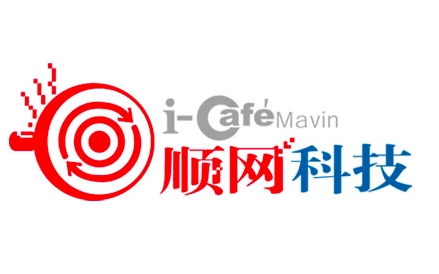

个人资料

- 创建日期：2016年7月7日
- 个性签名：be yourself
顺网科技发布对外投资公告 拟4000万收购网鱼网咖4%股权
DoNews游戏7月7日消息（编辑 陈艳曲）顺网科技发布对外投资公告公，宣布于近日与上海网鱼信息科技有限公司签署投资合作协议书，公司拟以自有资金4000万元向网鱼网咖原股东购买其所持有网鱼信息4.00%的股权。

公开资料显示，网鱼信息前身系上海网鱼发展有限公司，创立于1998年，业务范围覆盖连锁上网服务门店、电脑及周边产品、游戏社交软件等。旗下主要包括网鱼网咖、风蝶网咖、虎猫电竞和网鱼电竞四大连锁品牌。
据公司披露的财务状况显示，2015年网鱼信息实现营收2.1亿元，实现净利2154万元；2016年1~5月，网鱼信息实现营收9211万元，实现净利1134万元。
同时公告中还公布了本次投资后的股权结构，包括联众互动（9.78%）、普思资本（6.58%）和顺网科技（4.00%）等。
顺网科技表示，公司看重网鱼信息在网吧传统模式转型中的创新力、执行力和品牌引导力，将结合自身的电竞战略规划，与网鱼信息展开各方面的深度合作，改善电竞产品的用户体验，提升电竞大行业的影响力